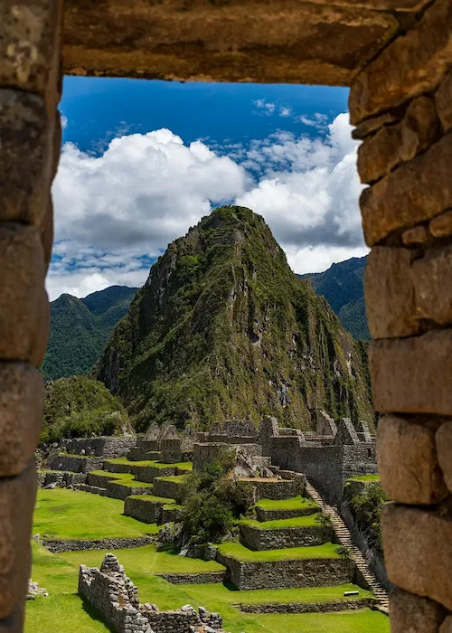

Data
- Area: 1,285,216 sq km
- Population: 34,352,719
- Capital: Lima
- Languages: Spanish, Quechua, Aymara
- Currency: Sol (PEN)
- Time Zone: UTC-5
- Calling Code: +51
- Internet TLD: .pe
Weather
- Temperature: 18 °C
- Conditions: Mostly Cloudy
- Wind: 14 km/h
- Wind Chill: